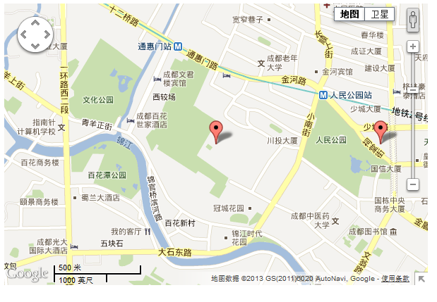

【探索HTML5第二弹03】走近地图应用的世界，看我们google地图可以看
前言
昨天，前天都有一些事情了，自己的学习任务有所耽搁，但这不是主要原因，主要原因是昨天和前天都在搞canvas相关东西，这个东东怎么说呢？我是越搞越不能确定自己是否会用到，所以过程中有点纠结，然后慢慢时间就过去了。另外，我本来想重新学习HTML5的，但是发现在走之前的老路，重复的过程就没必要了，我要从新思考一下最近的学习计划。
最近开始接触了google地图应用，那确实叫一个不错啊！！！可以完成很多事情了，这里用到的是GMaps.js，这里将其简单说下吧！
进入Gmaps的世界
简单应用
1 <!DOCTYPE html> 2 <html xmlns="http://www.w3.org/1999/xhtml"> 3 <head> 4 <title>获取当前位置</title> 5 <style type="text/css"> 6 #map { width: 1000px; height: 600px; } 7 8 </style> 9 <script src="js/jquery-1.7.1.js" type="text/javascript"></script> 10 <script type="text/javascript" src="http://maps.google.com/maps/api/js?sensor=true"></script> 11 <script src="js/gmaps.js" type="text/javascript"></script> 12 <script type="text/javascript"> 13 $(document).ready(function () { 14 /* 15 el 装载地图容器id 16 lat 纬度 17 lng 经度 18 */ 19 var map = new GMaps({ 20 el: '#map', 21 lat: 30.657358499999994, 22 lng: 104.049977 23 }); 24 }); 25 </script> 26 </head> 27 <body> 28 <div id="map"> 29 </div> 30 31 </body> 32 </html>
这就是最简单的应用了，代码上有一定说明，而且官方的api也很详细。
动态获取当前位置
这里我们与HTML5的Geolocation结合使用，告诉用户当前在哪里，是个不错的选择，借此就可以告诉其周围的酒店什么之类的了。
<!DOCTYPE html> <html xmlns="http://www.w3.org/1999/xhtml"> <head> <title>获取当前位置</title> <style type="text/css"> #map { width: 1000px; height: 600px; } </style> <script src="js/jquery-1.7.1.js" type="text/javascript"></script> <script type="text/javascript" src="http://maps.google.com/maps/api/js?sensor=true"></script> <script src="js/gmaps.js" type="text/javascript"></script> <script type="text/javascript"> $(document).ready(function () { /* el 装载地图容器id lat 纬度 lng 经度 该应用基于html5，并要求用户共享自身位置 */ navigator.geolocation.getCurrentPosition(function (position) { var map = new GMaps({ el: '#map', lat: position.coords.latitude, lng: position.coords.longitude }); }); }); </script> </head> <body> <div id="map"> </div> </body> </html>
参数说明
这里我们对代码中的一些参数说明，具体见google map api
<!DOCTYPE html> <html xmlns="http://www.w3.org/1999/xhtml"> <head> <title>获取当前位置</title> <style type="text/css"> #map { width: 1000px; height: 600px; } </style> <script src="js/jquery-1.7.1.js" type="text/javascript"></script> <script type="text/javascript" src="http://maps.google.com/maps/api/js?sensor=true"></script> <script src="js/gmaps.js" type="text/javascript"></script> <script type="text/javascript"> $(document).ready(function () { /* el 装载地图容器id lat 纬度 lng 经度 zoomControl 是否显示缩放控制 zoomControlOpt 缩放控制样式定义 panControl 是否显示移动容器 streetViewControl 是否显示右上角的人，用途不明 mapTypeControl 是否显示卫星控制 overviewMapControl 右下角预览地图 */ var map = new GMaps({ el: '#map', lat: 30.657358499999994, lng: 104.049977, zoomControl: true, zoomControlOpt: { style: 'BIG', position: 'TOP_RIGHT' }, panControl: true, streetViewControl: true, mapTypeControl: true, overviewMapControl: true, }); }); </script> </head> <body> <div id="map"> </div> </body> </html>
事件回调
当鼠标在地图上也会有一定事件的哟，不信试试！
<!DOCTYPE html> <html xmlns="http://www.w3.org/1999/xhtml"> <head> <title></title> <style type="text/css"> #map { width: 1000px; height: 600px; } </style> <script src="js/jquery-1.7.1.js" type="text/javascript"></script> <script type="text/javascript" src="http://maps.google.com/maps/api/js?sensor=true"></script> <script src="js/gmaps.js" type="text/javascript"></script> <script type="text/javascript"> $(document).ready(function () { /* el 装载地图容器id lat 纬度 lng 经度 zoomControl 是否显示缩放控制 zoomControlOpt 缩放控制样式定义 panControl 是否显示移动容器 streetViewControl 是否显示右上角的人，用途不明 mapTypeControl 是否显示卫星控制 overviewMapControl 右下角预览地图 */ /* 支持以下事件 bounds_changed None This event is fired when the viewport bounds have changed. center_changed None This event is fired when the map center property changes. click MouseEvent This event is fired when the user clicks on the map (but not when they click on a marker or infowindow). dblclick MouseEvent This event is fired when the user double-clicks on the map. Note that the click event will also fire, right before this one. drag None This event is repeatedly fired while the user drags the map. dragend None This event is fired when the user stops dragging the map. dragstart None This event is fired when the user starts dragging the map. heading_changed None This event is fired when the map heading property changes. idle None This event is fired when the map becomes idle after panning or zooming. maptypeid_changed None This event is fired when the mapTypeId property changes. mousemove MouseEvent This event is fired whenever the user's mouse moves over the map container. mouseout MouseEvent This event is fired when the user's mouse exits the map container. mouseover MouseEvent This event is fired when the user's mouse enters the map container. projection_changed None This event is fired when the projection has changed. resize None Developers should trigger this event on the map when the div changes size: google.maps.event.trigger(map, 'resize') . rightclick MouseEvent This event is fired when the DOM contextmenu event is fired on the map container. tilesloaded None This event is fired when the visible tiles have finished loading. tilt_changed None This event is fired when the map tilt property changes. zoom_changed None This event is fired when the map zoom property changes. 其中e中包含了地图相关信息 */ var map = new GMaps({ el: '#map', lat: 30.657358499999994, lng: 104.049977, zoomControl: true, zoomControlOpt: { style: 'BIG', position: 'TOP_RIGHT' }, panControl: true, streetViewControl: true, mapTypeControl: true, overviewMapControl: true, mouseout: function (e) { var s = ''; } }); }); </script> </head> <body> <div id="map"> </div> </body> </html>
为自己所在位置打上标记
 打标记
打标记

1 <!DOCTYPE html> 2 <html xmlns="http://www.w3.org/1999/xhtml"> 3 <head> 4 <title></title> 5 <style type="text/css"> 6 #map { width: 600px; height: 400px; } 7 8 </style> 9 <script src="js/jquery-1.7.1.js" type="text/javascript"></script> 10 <script type="text/javascript" src="http://maps.google.com/maps/api/js?sensor=true"></script> 11 <script src="js/gmaps.js" type="text/javascript"></script> 12 <script type="text/javascript"> 13 $(document).ready(function () { 14 /* 15 el 装载地图容器id 16 lat 纬度 17 lng 经度 18 zoomControl 是否显示缩放控制 19 zoomControlOpt 缩放控制样式定义 20 panControl 是否显示移动容器 21 streetViewControl 是否显示右上角的人，用途不明 22 mapTypeControl 是否显示卫星控制 23 overviewMapControl 右下角预览地图 24 */ 25 26 /* 27 支持以下事件 28 bounds_changed None This event is fired when the viewport bounds have changed. 29 center_changed None This event is fired when the map center property changes. 30 click MouseEvent This event is fired when the user clicks on the map (but not when they click on a marker or infowindow). 31 dblclick MouseEvent This event is fired when the user double-clicks on the map. Note that the click event will also fire, right before this one. 32 drag None This event is repeatedly fired while the user drags the map. 33 dragend None This event is fired when the user stops dragging the map. 34 dragstart None This event is fired when the user starts dragging the map. 35 heading_changed None This event is fired when the map heading property changes. 36 idle None This event is fired when the map becomes idle after panning or zooming. 37 maptypeid_changed None This event is fired when the mapTypeId property changes. 38 mousemove MouseEvent This event is fired whenever the user's mouse moves over the map container. 39 mouseout MouseEvent This event is fired when the user's mouse exits the map container. 40 mouseover MouseEvent This event is fired when the user's mouse enters the map container. 41 projection_changed None This event is fired when the projection has changed. 42 resize None Developers should trigger this event on the map when the div changes size: google.maps.event.trigger(map, 'resize') . 43 rightclick MouseEvent This event is fired when the DOM contextmenu event is fired on the map container. 44 tilesloaded None This event is fired when the visible tiles have finished loading. 45 tilt_changed None This event is fired when the map tilt property changes. 46 zoom_changed None This event is fired when the map zoom property changes. 47 48 其中e中包含了地图相关信息 49 50 */ 51 var map = new GMaps({ 52 el: '#map', 53 lat: 30.657358499999994, 54 lng: 104.049977, 55 zoomControl: true, 56 zoomControlOpt: { 57 style: 'BIG', 58 position: 'TOP_RIGHT' 59 }, 60 panControl: true, 61 streetViewControl: true, 62 mapTypeControl: true, 63 overviewMapControl: true, 64 mouseout: function (e) { 65 var s = ''; 66 } 67 }); 68 69 /* 70 建立标记需要调用addMarker方法 71 需要提供纬度经度，多余的信息可放置于details对象字面量里面，在事件调用时会用到 72 title为鼠标以上时提示 73 支持事件调用 74 infoWindow 中可使用html标签点击后可以看到内容（若是有点击事件，会先调用） 75 infoWindow 具有以下事件closeclick, content_changed, domready, position_changed and zindex_changed 76 77 addMarkers 可一次调用多个 78 */ 79 map.addMarker({ 80 lat: 30.657358499999994, 81 lng: 104.049977, 82 title: '公司位置', 83 details: { 84 database_id: 42, 85 author: 'HPNeo' 86 87 }, 88 click: function (e) { 89 alert('click:' + e); 90 91 } 92 93 }) 94 95 map.addMarker({ 96 lat: 30.657358499999994, 97 lng: 104.059977, 98 title: '另一标记', 99 infoWindow: { 100 content: '<p>ddddddddd</p>', 101 closeclick: function (e) { 102 alert('关闭'); 103 } 104 }, 105 click: function (e) { 106 alert('click:' + e); 107 108 } 109 110 111 }); 112 113 114 }); 115 </script> 116 </head> 117 <body> 118 <div id="map"> 119 </div> 120 121 </body> 122 </html>
1 <!DOCTYPE html> 2 <html xmlns="http://www.w3.org/1999/xhtml"> 3 <head> 4 <title></title> 5 <style type="text/css"> 6 #map { width: 600px; height: 400px; } 7 8 </style> 9 <script src="js/jquery-1.7.1.js" type="text/javascript"></script> 10 <script type="text/javascript" src="http://maps.google.com/maps/api/js?sensor=true"></script> 11 <script src="js/gmaps.js" type="text/javascript"></script> 12 <script type="text/javascript"> 13 $(document).ready(function () { 14 var map = new GMaps({ 15 el: '#map', 16 lat: 30.657358499999994, 17 lng: 104.049977 18 19 }); 20 //支持html5 21 GMaps.geolocate({ 22 success: function (position) { 23 var lat = position.coords.latitude, lon = position.coords.longitude; 24 map.setCenter(lat, lon); 25 map.addMarker({ 26 lat: 30.657358499999994, 27 lng: 104.049977, 28 title: '您的位置', 29 infoWindow: { 30 content: '您在这里' 31 } 32 }); 33 }, 34 error: function (error) { 35 alert('Geolocation failed: ' + error.message); 36 }, 37 not_supported: function () { 38 alert("Your browser does not support geolocation"); 39 }, 40 always: function () { 41 } 42 }); 43 }); 44 </script> 45 </head> 46 <body> 47 <div id="map"> 48 </div> 49 50 </body> 51 </html>

位置检索
我们当然可使用搜索技术了，google map api 果然强大！！！
1 <!DOCTYPE html> 2 <html xmlns="http://www.w3.org/1999/xhtml"> 3 <head> 4 <title></title> 5 <style type="text/css"> 6 #map { width: 600px; height: 400px; } 7 8 </style> 9 <script src="js/jquery-1.7.1.js" type="text/javascript"></script> 10 <script type="text/javascript" src="http://maps.google.com/maps/api/js?sensor=true"></script> 11 <script src="js/gmaps.js" type="text/javascript"></script> 12 <script type="text/javascript"> 13 $(document).ready(function () { 14 15 var map = new GMaps({ 16 el: '#map', 17 lat: 30.657358499999994, 18 lng: 104.049977 19 }); 20 21 //支持html5 22 GMaps.geolocate({ 23 success: function (position) { 24 var lat = position.coords.latitude, lon = position.coords.longitude; 25 map.setCenter(lat, lon); 26 map.addMarker({ 27 lat: 30.657358499999994, 28 lng: 104.049977, 29 title: '您的位置', 30 infoWindow: { 31 content: '您在这里' 32 } 33 }); 34 }, 35 error: function (error) { 36 alert('Geolocation failed: ' + error.message); 37 }, 38 not_supported: function () { 39 alert("Your browser does not support geolocation"); 40 }, 41 always: function () { 42 } 43 }); 44 45 $('#address').change(function (e) { 46 var el = $(this); 47 GMaps.geocode({ 48 address: el.val(), 49 callback: function (r, s) { 50 if (s == 'OK') { 51 var latlng = r[0].geometry.location; 52 map.setCenter(latlng.lat(), latlng.lng()); 53 map.addMarker({ 54 lat: latlng.lat(), 55 lng: latlng.lng(), 56 title: el.val() 57 }); 58 } 59 } 60 }); 61 }); 62 63 64 }); 65 </script> 66 </head> 67 <body> 68 <input type="text" value="请输入地址" id="address" /> 69 <div id="map"> 70 </div> 71 72 </body> 73 </html>
在地图上画圈圈！
这个功能真是贴心！公安局或者其他系统，在不同地点会有地区作案数预警信息，更具此功能可以将作案频繁的区域圈起来，重点提示！
画区域
1 <!DOCTYPE html> 2 <html xmlns="http://www.w3.org/1999/xhtml"> 3 <head> 4 <title></title> 5 <style type="text/css"> 6 #map { width: 600px; height: 400px; } 7 8 </style> 9 <script src="js/jquery-1.7.1.js" type="text/javascript"></script> 10 <script type="text/javascript" src="http://maps.google.com/maps/api/js?sensor=true"></script> 11 <script src="js/gmaps.js" type="text/javascript"></script> 12 <script type="text/javascript"> 13 $(document).ready(function () { 14 var path = []; 15 16 var map = new GMaps({ 17 el: '#map', 18 lat: 30.657358499999994, 19 lng: 104.049977 20 }); 21 22 //支持html5 23 GMaps.geolocate({ 24 success: function (position) { 25 var lat = position.coords.latitude, lon = position.coords.longitude; 26 var tmp = []; 27 tmp.push(lat); 28 tmp.push(lon); 29 path.push(tmp); 30 map.setCenter(lat, lon); 31 map.addMarker({ 32 lat: 30.657358499999994, 33 lng: 104.049977, 34 title: '您的位置', 35 infoWindow: { 36 content: '您在这里' 37 } 38 }); 39 }, 40 error: function (error) { 41 alert('Geolocation failed: ' + error.message); 42 }, 43 not_supported: function () { 44 alert("Your browser does not support geolocation"); 45 }, 46 always: function () { 47 } 48 }); 49 50 $('#address').change(function (e) { 51 var el = $(this); 52 GMaps.geocode({ 53 address: el.val(), 54 callback: function (r, s) { 55 if (s == 'OK') { 56 var latlng = r[0].geometry.location; 57 map.setCenter(latlng.lat(), latlng.lng()); 58 map.addMarker({ 59 lat: latlng.lat(), 60 lng: latlng.lng(), 61 title: el.val() 62 }); 63 var tmp = []; 64 tmp.push(latlng.lat()); 65 tmp.push(latlng.lng()); 66 path.push(tmp); 67 68 map.drawPolyline({ 69 path: path, 70 strokeColor: 'red', 71 strokeOpacity: 0.6, 72 strokeWeight: 2 73 }); 74 75 76 } 77 } 78 }); 79 }); 80 81 82 }); 83 </script> 84 </head> 85 <body> 86 <input type="text" value="请输入地址" id="address" /> 87 <div id="map"> 88 </div> 89 90 </body> 91 </html>
区域高亮显示
我们可以指定某个区域，比如我们的学校，然后在上面浮动一个div写上学校介绍，可以与css共同使用：
1 <!DOCTYPE html> 2 <html xmlns="http://www.w3.org/1999/xhtml"> 3 <head> 4 <title></title> 5 <style type="text/css"> 6 #map { width: 600px; height: 400px; } 7 8 </style> 9 <script src="js/jquery-1.7.1.js" type="text/javascript"></script> 10 <script type="text/javascript" src="http://maps.google.com/maps/api/js?sensor=true"></script> 11 <script src="js/gmaps.js" type="text/javascript"></script> 12 <script type="text/javascript"> 13 $(document).ready(function () { 14 var path = []; 15 16 var map = new GMaps({ 17 el: '#map', 18 lat: 30.657358499999994, 19 lng: 104.049977 20 }); 21 22 //支持html5 23 GMaps.geolocate({ 24 success: function (position) { 25 var lat = position.coords.latitude, lng = position.coords.longitude; 26 var tmp = []; 27 map.setCenter(lat, lng); 28 map.drawOverlay({ 29 lat: lat, 30 lng: lng, 31 layer: 'overlayLayer', 32 content: '<div style="border: 1px solid black; color: red;">高亮哦</div>' 33 }); 34 }, 35 error: function (error) { 36 alert('Geolocation failed: ' + error.message); 37 }, 38 not_supported: function () { 39 alert("Your browser does not support geolocation"); 40 }, 41 always: function () { 42 } 43 }); 44 45 46 }); 47 </script> 48 </head> 49 <body> 50 <input type="text" value="请输入地址" id="address" /> 51 <div id="map"> 52 </div> 53 54 </body> 55 </html>
右键菜单
我们还可以在地图上搞菜单，搞事件哦！！！
右键菜单
1 <!DOCTYPE html> 2 <html xmlns="http://www.w3.org/1999/xhtml"> 3 <head> 4 <title></title> 5 <style type="text/css"> 6 #map { width: 600px; height: 400px; } 7 8 </style> 9 <script src="js/jquery-1.7.1.js" type="text/javascript"></script> 10 <script type="text/javascript" src="http://maps.google.com/maps/api/js?sensor=true"></script> 11 <script src="js/gmaps.js" type="text/javascript"></script> 12 <script type="text/javascript"> 13 $(document).ready(function () { 14 var path = []; 15 16 var map = new GMaps({ 17 el: '#map', 18 lat: 30.657358499999994, 19 lng: 104.049977 20 }); 21 22 //支持html5 23 GMaps.geolocate({ 24 success: function (position) { 25 var lat = position.coords.latitude, lon = position.coords.longitude; 26 var tmp = []; 27 tmp.push(lat); 28 tmp.push(lon); 29 path.push(tmp); 30 map.setCenter(lat, lon); 31 map.addMarker({ 32 lat: 30.657358499999994, 33 lng: 104.049977, 34 title: '您的位置', 35 infoWindow: { 36 content: '您在这里' 37 } 38 }); 39 }, 40 error: function (error) { 41 alert('Geolocation failed: ' + error.message); 42 }, 43 not_supported: function () { 44 alert("Your browser does not support geolocation"); 45 }, 46 always: function () { 47 } 48 }); 49 50 map.setContextMenu({ 51 control: 'map', 52 options: [{ 53 title: '增加锚点', 54 name: 'addMarker', 55 action: function (e) { 56 this.addMarker({ 57 lat: e.latLng.lat(), 58 lng: e.latLng.lng(), 59 title: '新增锚点' 60 }); 61 this.hideContextMenu(); 62 alert('弹出菜单执行操作'); 63 } 64 }] 65 66 }); 67 }); 68 </script> 69 </head> 70 <body> 71 <input type="text" value="请输入地址" id="address" /> 72 <div id="map"> 73 </div> 74 75 </body> 76 </html>
锚点群
最后，我们来看一个非常有用的功能
1 <!DOCTYPE html> 2 <html xmlns="http://www.w3.org/1999/xhtml"> 3 <head> 4 <title></title> 5 <style type="text/css"> 6 #map { width: 600px; height: 400px; } 7 8 </style> 9 <script src="js/jquery-1.7.1.js" type="text/javascript"></script> 10 <script type="text/javascript" src="http://maps.google.com/maps/api/js?sensor=true"></script> 11 <script src="js/gmaps.js" type="text/javascript"></script> 12 <script type="text/javascript" src="http://google-maps-utility-library-v3.googlecode.com/svn/tags/markerclusterer/1.0/src/markerclusterer.js"></script> 13 <script type="text/javascript"> 14 $(document).ready(function () { 15 var path = []; 16 var map = new GMaps({ 17 div: '#map', 18 lat: 30.657358499999994, 19 lng: 104.049977, 20 markerClusterer: function (map) { 21 return new MarkerClusterer(map); 22 } 23 }); 24 var lat_span = 30.657358499999994; 25 var lng_span = 104.049977; 26 for (var i = 0; i < 100; i++) { 27 var latitude = Math.random()*0.01 + 30.657358499999994; 28 var longitude = Math.random()*0.01 + 104.049977; 29 30 map.addMarker({ 31 lat: latitude, 32 lng: longitude, 33 title: 'Marker #' + i 34 }); 35 } 36 }); 37 </script> 38 </head> 39 <body> 40 <input type="text" value="请输入地址" id="address" /> 41 <div id="map"> 42 </div> 43 44 </body> 45 </html>
大家看到了，根据此功能可以完成复杂的应用哦！！！
结语
好了，今天就到这了，经过这次的学习，我想关于地图的应用应该都不在话下了。需要源码直接搜索GMaps.js里面去看吧，我这个都是抄袭哦。